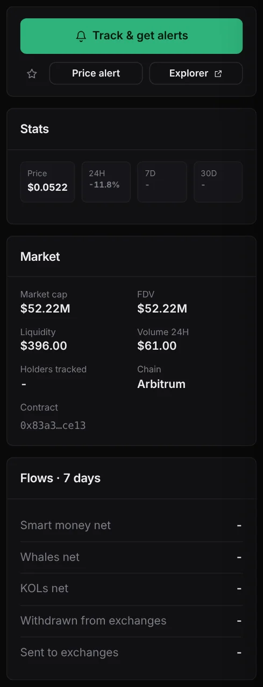
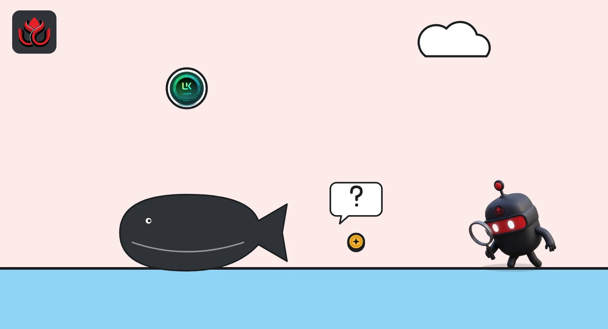

One shark sold $2.59 million of LYK. The token's Arbitrum pool holds $396
DeepSea logged big shark selling in two layer 2 tokens, LayerK's LYK and Linea's LINEA. LYK's public markets were far too small to absorb what was counted.
Key points
- A single shark wallet, ending 4df3, sold $2.59 million of LYK on Arbitrum in 8 trades and bought none, DeepSea's live feed showed at 6:34 a.m. ET on November 6, 2026.
- DeepSea's LYK page lists $396 of on-chain liquidity. CoinGecko tracks one market for LYK, on LBank, with $263,655 of trading in 24 hours.
- On Linea, a wallet ending e4b7 sold $1.37 million of LINEA, about 19% of the token's $7.37 million daily volume on CoinGecko.
 What DeepSea's data shows
What DeepSea's data shows
DeepSea's live feed totals trades by wallets it tags as sharks (large, active traders). At 6:34 a.m. ET on November 6, 2026, second on its 24-hour selling list was LYK on Arbitrum: $2,593,123 sold, nothing bought, all by one wallet ending 4df3 in 8 trades. The sale was not in DeepSea's 12:34 a.m. ET reading, so it happened after that.
Third was LINEA on the Linea network: $1,369,145 sold and $62,779 bought by 2 wallets in 14 trades. The wallet ending e4b7 did all of the selling, plus $40,485 of buying, in 13 trades. Most of it was already in the 12:34 a.m. reading. DeepSea gives no names for either wallet.
DeepSea's LYK token page lists just $396 of liquidity and $61 of 24-hour volume on chain.

Data: DeepSea (desea.io), checked November 6, 2026, 6:43 a.m. ET.
What are LYK and LINEA?
CoinGecko lists LYK as the token of LayerK, a blockchain built with Arbitrum's Nitro technology, with a total supply of 1 billion. LINEA is the token of Linea, an Ethereum layer 2 network (a faster, cheaper chain that settles on Ethereum). A layer 2 token often pays for or governs that network.
Too big for the market
The LYK numbers do not add up as a normal market sale. At 6:44 a.m. ET, CoinGecko showed LYK at $0.0583, with its only tracked market on LBank (LYK/USDT) doing $263,655 in 24 hours. DeepSea's page, with a price of $0.0522, put on-chain liquidity at $396. A $2.59 million sale is about 10 times LBank's daily volume.
So this was probably not a normal sale on a public market. DeepSea's feed counts it as selling, but the data we read does not show where the tokens went. LYK is down 95% from its $1.25 record of October 1, 2024, and hit an all-time low of $0.0577 on November 2, 2026.
LINEA is a deeper market. CoinGecko showed it at $0.002244, down 5.0% in 24 hours and 18.1% in 30 days, with $7.37 million of volume across 64 markets including Binance and OKX. Its low was $0.00207 on August 19, 2026.
Shark selling vs. 24-hour market volume
US$ million
Sources: DeepSea live feed, CoinGecko

Smart traders lean the other way on LINEA
While one wallet sold LINEA, DeepSea's perpetual futures panel (contracts that bet on price without holding the token) showed smart traders 98% long: $894,100 in long bets from 3 wallets against $18,500 short. The longs' average entry was $0.00290, above the current price.
This piece uses data from DeepSea and CoinGecko.
LC Insight analysis
This section is our reading of the facts above, not a statement of fact.
- We think the LYK sale is best read as a large move of tokens, not a market dump. No public market we found could have taken $2.59 million of selling in a day.
- For LINEA, $1.37 million of selling into $7.37 million of volume is big enough to matter, and it came as the price slid 5%.
- When a dollar figure in a wallet feed is far larger than a token's market, the figure tells you about the wallet, not about demand for the token.
What's next
- Whether the 4df3 wallet's LYK shows up on an exchange
- LINEA near its August 19 low of $0.00207
- Smart traders' LINEA longs, now below their entry price
Disclaimer. This article is based on public information and the sources listed below as of the update time shown. It is for information only and is not investment, legal or tax advice. Figures may change as companies and authorities publish new data.
Sources
- DeepSea live feed, 24-hour shark aggregates (fetched November 6, 2026, 6:34 a.m. ET; earlier reading 12:34 a.m. ET)
- DeepSea, LYK (Arbitrum) token page: price, liquidity and volume (checked November 6, 2026, 6:43 a.m. ET)
- DeepSea, LINEA (Linea) token page: long/short panel (checked November 6, 2026, 6:43 a.m. ET)
- CoinGecko, LayerK (LYK) price, supply and markets (November 6, 2026, 6:44 a.m. ET)
- CoinGecko, Linea (LINEA) price, volume and markets (November 6, 2026, 6:44 a.m. ET)